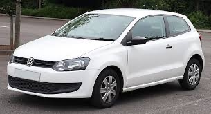

The Volkswagen Polo is a well-regarded compact car that has become a staple in the subcompact segment since its introduction in 1975. Known for its practicality, reliability, and quality, the Polo combines German engineering with a comfortable and refined driving experience. Its design has evolved over the years, now showcasing a more modern and sporty aesthetic that appeals to a broad range of drivers. The Polo’s cabin is spacious for a vehicle of its size, offering high-quality materials, a straightforward layout, and features that prioritize driver and passenger comfort. Recent models include advanced technology like touchscreen infotainment systems, smartphone connectivity, and driver-assistance features, making the Polo a well-rounded option in its class.
On the road, the Volkswagen Polo delivers a balanced and efficient performance, catering to both urban and highway driving. It comes with a range of engine options, from economical petrol engines to more powerful turbocharged variants, ensuring there’s a model suited to different driving preferences and needs. The Polo’s handling is composed and responsive, providing a smooth ride that feels stable even on longer journeys. Known for its fuel efficiency and low running costs, the Polo is an excellent choice for city dwellers and daily commuters alike. With its blend of quality, comfort, and efficiency, the Volkswagen Polo continues to be a popular choice in the small car market, appealing to drivers looking for a reliable, stylish, and affordable vehicle.